メモリアロケーター
・メモリの確保
プログラムでいういわゆる「メモリの確保」のことを英語で「アロケート」(割り当て)といいます。
メモリ確保するときにはC言語ならmalloc、C++ならnewを用いるのが一般的ですね。
しかし、標準で実装されているnew系統は様々な用途のために一般化・安全化されていて、少し遅いです。
普通に使う分には気にならない程の遅延ですが、短時間に多くのnew-deleteが行われる
例えばゲームではメッセージ処理のためには実行ループ全体の処理を1/60=16.66ms以下に抑える必要があります。
その多くは描画に使われますが、内部処理のnewでも結構時間を喰います。
(特に制御すべき物体が多い場合)
そこでそのような高速で行われるメモリ確保を実現すべく、TLSFメモリアロケータ(TLSF:Two-Level Segregate Fit)という機構を実装していきたいと思います。
・ステップ
TLSFメモリアロケータを創るのはなかなかに大変で、
いくつものステップを踏んで、順に創っていきます。
- TLSFメモリアロケータの理論
- BoundaryTag アルゴリズムの理論
- BoundaryTag アルゴリズムの実装
- TLSFメモリアロケータの実装
それぞれ難しいので かなり長くなります。
じっくりと考えていきましょう。
・TLSFメモリアロケータ(理論編)
メモリを確保するアロケータの役割はおおまかに言うと
「プログラム開始時に一塊の大きなメモリブロックを確保して、
メモリ要求があったときにメモリを切り出して貸し出し管理する。」
という役割です。
まずそのために「切り出した後のメモリブロック」をクラス化します。
以下の図を見ながら考えてきましょう
まずひとまとまりの大きなメモリを確保しておきます。
例として1024byte確保したとします。
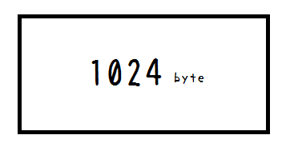
そこに「24byteのメモリが欲しい」という要求が来た場合、TLSFは適切な大きさのメモリを切り出します。
そのために2段階の検索を行います。
第一段階
まず「指定されたbyteを超える２のべき乗数」を求めます。
これは2進数bitで考えると簡単で、24byteの例に対しては
24 = 0001 1000
と、bitが立っている最大の位は下位から数えると5番目にあります。
ここは１０進数でいうと16で、24が16(=2^4)より大きく、32(=2^5)以下であることが一発で分かります。
この4を要求byte24に対するFLI - (First Level Index) と呼びます。
第二段階
24が16～32の間にあることは分かりましたが、これで32byte切り出して返すのではさすがに無駄が多いです（要求byte数が多くなると特に）
そこでこの区間をさらに分割します。
ここでも高速化のために２のべき乗に分割します。ここでは4(=2^2)分割することとし、
ひとつの区間あたり大きさは、(32-16)/4=4 となるので
| SLI |
区間範囲 |
| 0 |
16～19 |
| 1 |
20～23 |
| 2 |
24～27 |
| 3 |
28～31 |
と、24は3番目の区間に入ることになります。
このときの一つ前(後述)のインデックス"1"（0ベース）を24のSLI - (Second Level Index) と呼びます。
このFLIとSLIを高速で求めて要求byte数にgood fit（ぴったりではないが準適当）するメモリブロックを求めるのがTLSFです。
best fit（ぴったり適当）なメモリを返すわけではないのでフラグメンテーションは起こります。
しかしそれよりも速度を重視するのがこのアルゴリズムの特徴でしょう。
・BoundaryTag アルゴリズム(理論編)
では次に無事メモリを切り出すことができたとして、その個々の振る舞いを考えましょう。
今、以下の赤枠のようにメモリを切り出したとします。
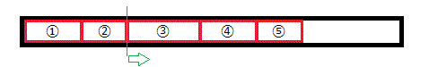
②と③の境界から見て、③のメモリブロックのサイズを知るためにはどのような情報が必要でしょうか。
②と③の境界から辿って③と④の境界を検出して差分で出す？ いえいえそんな面倒なことはしたくありません。
そこでメモリを確保するときに③の先頭に③のサイズを書き込んでおきます。
そうすれば境界に立ちながら③のサイズを取得できます。
③の保持メモリサイズが40byteだとすると、サイズを書き込むスペース4byte(unsigned int)分増えて全部で44byte確保する必要があります。
というわけで各メモリブロックの先頭にタグをつけるようにします。
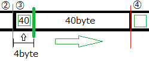
こうすると、②と③の境界から③のサイズを取得して、そのままそのサイズ分ジャンプすれば③と④の境界までいけます。
これを繰り返すことで順方向へは自由にポンポンとジャンプして参照することができます。
・
・
・
では逆方向へはどういけばいいでしょうか。
同じようにメモリブロックの末尾に終端タグを入れればうまくいきそうです。
ただし書き込むサイズは先頭タグ分も含めたサイズです。
当然終端タグ分もメモリは増えますのでさらに4byte(unsigned int)分増えて全部で48byte確保することになります。
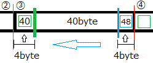
これで
こうすると、③と④の境界から先頭タグ分も含めた③のサイズを取得して、そのサイズ分ジャンプすれば②と③の境界までいけます。
これを同じように繰り返すことで逆方向へも自由にポンポンとジャンプして参照することができます。
このように前後のメモリブロックへポンポンと自由にアクセスできるような機構をBoundaryTag アルゴリズムといいます。
この機構の強みとして、隣同士の領域の統合（マージ）・ある領域の分割（デバイド）が容易な点にあります。
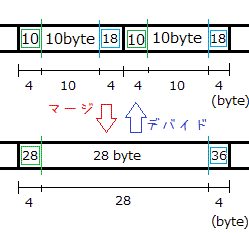
領域自体は線形に繋がっていると仮定しているので、先頭タグと終端タグの値の書き換えだけで実現できます。
この性質は今回用いる高速アロケータを実現するにあたって大きな武器となります。
実際はこれらを踏まえてクラス化するので、先頭タグ部分は単純なunsigned intではなく、その管理クラス分の大きさを確保します。
・BoundaryTag アルゴリズム(実装編)
では、実際に実装していきましょう。
今回はTLSFアロケータに用いるために少し特化させますので余分なものがくっつきますが本質は変わりません。
（BoundaryTagだけクラス化してそこからTLSF用に継承してもいいですがめんどうなので（＾＾； ）
今回創るBoundaryTagBlockクラスは↑の理論編を考慮して次のメンバを持ちます。
- 運用メモリのサイズを表す unsigned int size
- 運用メモリの確保、アクセス用 unsigned char ポインタ p
- 終端タグアクセス用 unsigned int ポインタ c
先頭タグはクラス作成時のthisを当てはめます。
実際には先頭タグの部分にBoundaryTagBlockクラスの実体があることになるので、thisが先頭となります。
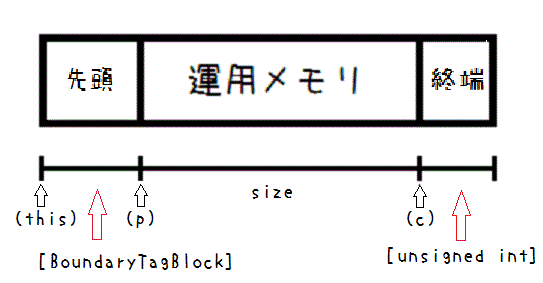
さらにTLSF用に特化させるために
- その確保されたメモリが使用中がどうかを表すフラグ bool flag
同じFLI,SLIを持つフリーブロックとしてまとめるために(後述)
- 双方向リストを形成する BoundaryTagBlock ポインタ prevとnext
次にメンバ関数ですが、流儀の問題でカプセル化はガン無視して外部から操作しまくりますので全てpublicです。
- デフォルトコンストラクタ
- 運用メモリ先頭のポインタ(メンバとしてのp)とデータサイズを受け取るコンストラクタ
- デストラクタ
- 運用データサイズを取得するunsigned int GetDataSize()
- 自身が占有する全てのデータサイズを取得するunsigned int GetAllSize()
- 双方向リストへ入れるBoundaryTagBlock* Regist(BoundaryTagBlock* nbp)
- 双方向リストから抜けるBoundaryTagBlock* Remove();
メンバ関数に関しては難しいものはありません。全て説明の通りです。
運用データサイズは即ちunsigned int sizeの参照用ですし、占有する全てのデータサイズもunsigned int ポインタ cを通して取得可能です。
双方向リストに関しても一般的なものと変わりません。
（そろそろ型の名前を打つのが面倒になってきたので（実際はコピペしてますが）
typedef unsigned int uint;
typedef unsigned long ulong;
typedef unsigned char byte;
typedef BoundaryTagBlock BBlock;
typedef TLSFMemoryAllocator TLSF;
・・・とさせてください）
以上よりコードは次のようになります。実装と合わせてごらんください
//BoundaryTagBlock.h
//Boundary Tag
//[先頭タグ][データ部][終端タグ]
class BoundaryTagBlock{
public:
//データマップ
//[this](sizeof(BoundaryTagBlock))[p](size)[c](sizeof(uint))
bool flag; //使用フラグ
uint size; //データ部サイズ
byte* p; //データ部への先頭ポインタ
uint* c; //endTagへのポインタ
BoundaryTagBlock *prev,*next;//BoundaryTagBlockの双方向リスト
//コンストラクタ
BoundaryTagBlock();
BoundaryTagBlock(byte* dataP,uint size);
//デストラクタ
~BoundaryTagBlock();
//運用データサイズを取得
uint GetDataSize();
//自身が占有する全てのデータサイズを取得
uint GetAllSize();
//双方向リストへ入れる
BoundaryTagBlock* Regist(BoundaryTagBlock* nbp);
//双方向リストを抜ける
BoundaryTagBlock* Remove();
};
typedef BoundaryTagBlock BBlock;
//BoundaryTagBlock.h
#include "main.h"
//コンストラクタ
BoundaryTagBlock::BoundaryTagBlock():
flag(false),size(0),p(NULL),c(NULL){
prev=next=this;
}
BoundaryTagBlock::BoundaryTagBlock(byte* dataP,uint size):
flag(false),p(dataP){
prev=next=this;
this->size=size;
if(p!=NULL){
//cはpからsizeだけ後方にある終端タグを指す
c=(uint*)(dataP+size);
*c=sizeof(BoundaryTagBlock)+size+sizeof(uint);
}
else{c=NULL;}
}
//デストラクタ
BoundaryTagBlock::~BoundaryTagBlock(){}
//運用データサイズを取得
uint BoundaryTagBlock::GetDataSize(){
return size;
}
//自身が占有する全てのデータサイズを取得
uint BoundaryTagBlock::GetAllSize(){
return *c;
}
//双方向リストへ入れる
BoundaryTagBlock* BoundaryTagBlock::Regist(BoundaryTagBlock* nbp){
//呼び出し元は常にダミーリストの先頭ブロック
nbp->next=next;
nbp->prev=this;
nbp->prev->next=nbp->next->prev=nbp;
return this;
}
//双方向リストを抜ける
BoundaryTagBlock* BoundaryTagBlock::Remove(){
prev->next=next;
next->prev=prev;
prev=next=this;
return this;
}
コード載せて丸投げしといてなんですけどとりあえずBoundaryTagBlockについての理論と実装はこんな感じです。
双方向リストの運用については次のTLSFの実装編で説明します。
・TLSFメモリアロケータ(実装編)
（実装編といいつつ実は理論編その２みたいな部分もあります）
どうでしょうか、今まではBoundaryTagBlockを通して個々のメモリブロックについて実装してきました。
今度はそれらを全体的にまとめて管理することについて考えます。
BoundaryTagBlockを用いる有用性
メモリアロケータは最初に一括で大きなメモリブロック塊を確保します。newはこの時にしか使用しません。
そして理論編でいったように要求されるメモリサイズに対してgood fit するメモリブロックを切り出して分け与えます。
ここでgood fitするサイズが求まったとして、そのサイズを元にこのメモリブロック上にBoundaryTagBlockを作成します。
このとき、newを使いますが新しくメモリを確保したりはしません。placement newを使って指定されたポインタに作成します。
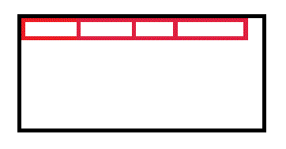
上図の赤枠それぞれがBoundaryTagBlockだと思ってください。
運用メモリブロックは切り出して（外部に）分け与えていますので「使用中」です。よってflagはtrueです
今、このうちひとつが「解放」されて不要になったとします。つまりflagをfalseにすると こうです。
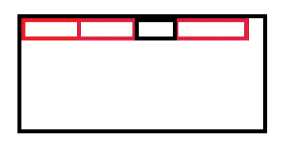
もうひとつ「解放」してみましょう

さて、このあとにまたメモリが欲しくなったとして下図のようなサイズのメモリ要求がきたとするとどこにBoundaryTagBlockを作成すればいいでしょうか。
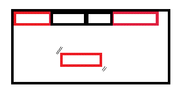
右端に新たに作りましょうか、いえいえそんなことをするとあっという間に全体のメモリ限界がきてしまいます。
ここは「解放」されて不要になった領域をマージして空きを増やして新しいメモリ要求を受け入れましょう。
ここがbest fitではなくgood fitたる由縁であり長所であり短所でもあるところです。
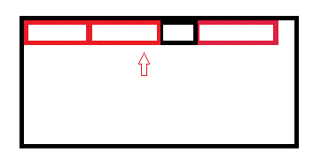
お気づきでしょうか、この一連の操作を構成する要素は
- 一塊のメモリブロックからの切りだし（分割）
- 隣接した不要ブロックのマージ（統合）
サイズ管理も含めてBoundaryTagBlockの特性そのままです。
隣接した不要ブロックのマージを常に行うと「未使用」領域は2つ以上隣接して存在することはないということも重要な性質です。
（つまり本当は上の図で二つめの領域を「開放」した時点で既に「不要」領域はマージされている）
フリーリストとアクティブリスト
「使用中」や「解放」・「不要」などありますがこれらの扱いについて考えていきます。
BoundaryTagBlockにはまさにそのフラグを変数としてもっています。
ここで管理の立場からフリーリストとフリーリストビットというものを導入します。
フリーリストはBoundaryTagBlockが保持している運用メモリのサイズによって分類(index)される双方向リストの基点（ダミー）の配列です。
追随してフリーリストビットはあるindexにおけるフリーリストが(ひとつでも)存在しているかを示すフラグの配列です。
どちらも配列の長さは同じです。
運用メモリのサイズによる分類とははじめに述べたFLIとSLIのことで、指定サイズがどの区間のindexかを表します。
そのindexを求めるためにはFLIとSLIを求める必要があります。
FLIとSLIは指定サイズのみから求まります。
bit演算を多分に用いますので苦手な方はこの機会に身につけてください。
FLIの求め方
まず、forを使わないで立っているbitをカウントする関数byte GetBitCount(ulong value)を作ります。
とりあえず32bitのulongではなく8bitのbyteについて考えてみましょう。
たとえば24を考えます。24は二進数では次のようになります。
24 = [0001 1000]
GetBitCountに24を渡して"2"という返り値が欲しいのです。
では実際にどうするかというと次のようにします。
まずvalを元の値val=[0001 1000](=24)として、[0101 0101](=0x55)との論理積& をとったものをval1とすると
val = [0001 1000]
& [0101 0101]
val1= [0001 0000]
また、valを１だけ右シフトした値と[0101 0101]との論理積をとったものをval2とすると
(val >> 1)= [0000 1100]
& [0101 0101]
val2 = [0000 0100]
val1とval2の単純な和とると、次のようになります。
val1 + val2 = [0001 0100]
2桁づつ区切ってみると、元々の24=[0001 1000]のbitが立っている箇所の個数が（2進数で）個々に現れています。
val=val1 + val2 = [0001 0100]として
続けて同じように今度は[0011 0011](=0x33)に対して同様の操作を行います。
ただしval2を作るときの右シフトは２とします。
val = [0001 0100]
& [0011 0011]
val1= [0001 0000]
(val >> 2)= [0000 0101]
& [0011 0011]
val2 = [0000 0001]
val=val1 + val2=[0001 0001]
今度は4桁区切りでのbitの個数が出てきました。（どちらも1ですが・・・）
最後に[0000 1111](=0x0f)に対して行います。右シフトは4です。
val = [0001 0001]
& [0000 1111]
val1= [0000 0001]
(val >> 4)= [0000 0001]
& [0000 1111]
val2 = [0000 0001]
val=val1 + val2=[0000 0010]
はい、ご所望の"2"が求まりました。
「逆に計算多くなってんじゃねえか」とお思いでしょうが、bit演算は高速です。
よってbit演算部を無視すると正味3回の和演算だけで済んでいます。
forで愚直にいくとなると8回回りますし、何よりifが入ります。これでは遅いです。
8bitで和演算3回、16bitなら4回、32bitなら5回とbitが多くなればなるほど差がでるのはべき乗とlogに通じるものがあります。
今回はメモリアロケータという特性上、32bitのulongに対応するものを作っておきます。
説明用にvalを用いて演算しましたがひとつの式にまとめてもOKです。その際は計算の優先順位に気をつけて（）をつけるのをお忘れなく。
//立っているビット数をカウントする(32bit ulong)
int TLSFMemoryAllocator::GetBitCount(ulong value){
ulong count = (value & 0x55555555) + ((value >> 1) & 0x55555555);
count = (count & 0x33333333) + ((count >> 2) & 0x33333333);
count = (count & 0x0f0f0f0f) + ((count >> 4) & 0x0f0f0f0f);
count = (count & 0x00ff00ff) + ((count >> 8) & 0x00ff00ff);
return (count & 0x0000ffff) + ((count >> 16) & 0x0000ffff);
}
それでは本命のFLIについて、FLIを求める関数int GetMSB(ulong value)について考えていきます。
MSBはMost Significant Bitのことで、とりあえず今は「FLIと同じようなもの」と認識しておいてください。（あとで微妙な違いを説明します）
MSBは立っている中で一番上位のbitのことです。これを取得します。
また24を例にとります。val=[0001 1000](=24)ならばMSBは"4"(0ベース)と出て欲しいわけです。
これをbit演算で簡単に求める操作は以下のようになります。
まず元のbit列と同じval1=val=[0001 1000]と右へひとつシフトしたval2=(val >> 1)=[0000 1100]との論理和をとります。
val=(val1 + val2)=[0001 1100]
続いて右シフトを2として繰り返します。
val1 = [0001 1100]
val2 = [0000 0111]
val = (val1 + val2) = [0001 1111]
同様に右シフトを4とすると。
val1 = [0001 1111]
val2 = [0000 0001]
val = (val1 + val2) = [0001 1111]
最大位のbit以下全てのbitが立ちました。あとはこれを先ほどのGetBitCountにぶち込んでカウントすれば"5"とすぐ出ます。
0ベースなのを忘れずにマイナス1すれば"4"が求まりました。
それではMSBとFLIは何が違うのでしょうか？答えは２のべき乗ぴったりの数の扱いです。
例えば32 = [0010 0000]について、MSBは5、FLIは4です。（どちらも0ベース）
FLIに関しては、FLIは対象となる値valに対してval≤2^(n+1)である最小のnと等しいものです。
つまりFLIは2^nより大きく～2^(n+1)以下のどのnに分類されるかを表す指標です。（2^n < val ≤ 2^(n+1)）
一方MSBはある数が2進数の桁上がりの性質から2^n以上～2^(n+1)未満であることを示す分類です。（2^n ≤ val < 2^(n+1))
具体的な計算は省きますが32周辺のFLIとMSBについて表にまとめます。
| 数値val | MSB(val) | FLI | MSB(val-1) |
| ・ | ・ | ・ | ・ |
| 31 | 4 | 4 | 4 |
| 32 | 5 | 4 | 4 |
| 33 | 5 | 5 | 5 |
| ・ | ・ | ・ | ・ |
というわけで表中でネタバレしてますがMSBをFLIに変換するにはval-1をGetMSBに渡す必要があります。
２のべき乗ぴったりでなければMSBとFLIは共通です。未満や以下で１だけずれているだけなのでval-1すれば解決します。
これによって（まー心配ないと思うけど）0を渡すと-1でunsigned longにひっかかるのでエラーチェックが必要です。
こうした±1のズレはindexの0ベースも相まって非常に発生しやすいうえに修正もしにくいという厄介なものなので注意が必要です。
ともかく、これでFLIを求めることができました。
//2^x<=valueとなるxを返す(MSB)
int TLSFMemoryAllocator::GetMSB(ulong value){
if(value == 0) return -1;
value |= (value >> 1);
value |= (value >> 2);
value |= (value >> 4);
value |= (value >> 8);
value |= (value >> 16);
return GetBitCount(value)-1;
}
SLIの求め方
SLIは第一カテゴリであるFLIの範囲をさらに分割した第二カテゴリをあらわすものでした。
ここでは4(=2^2)分割しているため、例えばFLI=4の範囲については下の表の通りになります。
| SLI |
区間範囲 |
| 0 |
16=[0001 0000]～19=[0001 0011] |
| 1 |
20=[0001 0100]～23=[0001 0111] |
| 2 |
24=[0001 1000]～27=[0001 1011] |
| 3 |
28=[0001 1100]～31=[0001 1111] |
さて、肝心のSLIですが表中に赤く示してあるところが二進数でいうSLIに一致します。
同じメモリ帯なら共通かつ4区画でそれぞれ異なり連番である上にbit演算でとりだせそうです。
ではまた24=[0001 1000]を例にとって考えましょう。これのSLIとして"2"が出ればOKです。
まず、SLIを求めるためには最上位以上のbitが立っているとまずいです。
SLIは必ず分割数（ここでは4）より小さい必要があるため、値が大きくなってまずいですし、表中の赤字より上位のbit情報は意味を持ちません。
そこでまずbitマスクとしてmask = ~([1111 1111] << FLI)を考えます。今24のFLIは4なのでmask = ~([1111 0000]) = [0000 1111]
これを論理積演算時にマスク掛けすればFLI以上のbitは無効化されます。(val1)
次に分割数4について、4=2^2ですがこの指数べきをNとすると 4=2^N,N=2と表現されます。
マスク掛けした後のbit列にFLI-Nだけ右シフトをかけると赤字の部分が取り出せます。(val2)
mask = ~([1111 1111] << FLI) = [0000 1111]
val = 24 = [0001 1000]
val1 = val & mask = [0000 1000]
val2 = val1 >> (FLI-N) = [0000 0010] = 2
よってSLIを得るために必要な情報は、対象のサイズval,そのFLI,分割数を示すNの３つです。
Nは定数として、さらにFLIと同じ理由でval-1を用いて次のように求めることができます。(32bit)
//第二カテゴリーインデックス(SLI)を返す
byte TLSFMemoryAllocator::GetSLI(uint size,byte fli){
// 最上位ビット未満のビット列だけを有効にするマスク
uint mask=~(0xffffffff<<fli);
// 右へのシフト数を算出
uint rs=fli-N;
// 引数sizeにマスクをかけて、右へシフトすればSLIに
byte sli=(size & mask) >> rs;
return sli;
}
フリーリストとメモリ切りだし
フリーリストとフリーリストビットの配列は全部で何個あるでしょうか。
答えは「初期に確保した一塊の全体メモリブロックのFLIとSLIに対して(FLI*2^N+SLI)個」です。
まずFLIで分類し、その後2^NにSLIでさらに分類しているのでこうなるのは理解できるかと思います。
indexとしては0ベースなのでFLI*2^N+SLI-1がfIndexになります。
結構頻繁に使うので関数化しておきましょう。FLIとSLIをうけとりindexの番号を生成する関数です。
//フリーリストインデックスを求める
byte TLSFMemoryAllocator::GetFIndex(byte fli,byte sli){
return fli*pow(2,N)+sli-1;
}
フリーリストに関わる管理変数は種類が多く、その役目をしっかり把握しておくことが重要です。
ちょっと実際に運用する時のように初期状態として大きなメモリブロックを確保したとしましょう。
そうしてフリーリストに関わる全ての変数を初期化した段階の図が下のようになります。
（右は型の名前、bool[]型のtrue,falseは便宜上0,1で表現、[ ]はその固まりでひとつの要素ということ）
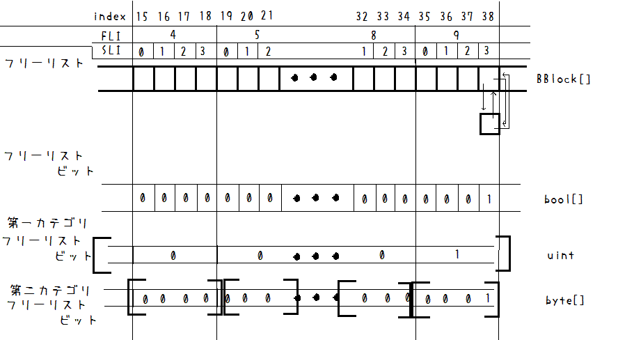
TLSFのメンバ変数として以下のものを定めます。
- フリーリストブロック配列先頭ポインタ BBlock* freeList;
- フリーリストビット bool* freeListBit;
- フリーリストビット(第一カテゴリ) uint freeListBitFLI
- フリーリストビット(第二カテゴリ) byte* freeListBitSLI
例えば1024byteのメモリを初期にnewしておくとすると、まずそのFLIとSLIを求めます。
1024のFLIは9,SLIは3なので一番初めにフリーリストに一つだけフリーブロックを入れておきます。
index = FLI*2^N+SLI-1 より1024のFLI、SLIからindexを求めるとindex = 38 です。
よってindex = 38のところにあるフリーリストにひとつBBlockを(placement newで)生成して双方向リストを結びます。
| FLI = 9 |
| SLI |
区間範囲 |
| 0 |
512～639 |
| 1 |
640～767 |
| 2 |
768～895 |
| 3 |
896～1023 |
しかしいきなり900byteもメモリ要求はこないでしょう。
大抵4byteや8byte等の小さい大きさのものが大量にくるはずです。
第二カテゴリの分割数によって最小のメモリブロックの大きさは決まりますが、
初期段階では4byteや8byteのFLI,SLIに対応するフリーリストビットはfalseです。（indexに対応するフリーリストにフリーブロックがない）
また、例として24byte要求がきたときを考えます。
方針としてはBoundaryTagの特性を活かして初期状態の大きなメモリを24byte用に分割して切り出します。
初期段階では24byteのFLI,SLIに対応するフリーリストビットはfalseです。（indexに対応するフリーリストにフリーブロックがない）
この時点でフリーリストビットを上方へ辿ってフリーブロックが存在するフリーリストの要素を探しにいきます。
では、forでまわして探索しましょうか？いえいえここもbit演算で高速化できます。（そのためのフリーリストビットです）
24は(FLI,SLI) = (4,1)です。
まず探索第一段階として同FLI内の上位SLIにbitが立ってないかを探します。
これは第二カテゴリフリーリストビットを用いて、さきほどのSLIを求める際にやったようにSLI以上を有効とするmaskを作り論理積をとります。
//同fli内の上位sliを返す(第二カテゴリ)
byte TLSFMemoryAllocator::GetFreeListSLI(byte fli,byte sli){
//部分フリーリストバイト(fli内の4byte)
byte rb=freeListBitSLI[fli];
//sli以上が立っているマスク
byte sb=0xffffffff << sli;
//部分フリーリストビットのsli以上に立っているビットがあるか
byte rsb= rb & sb;
if(rsb==0){
return -1;//同fli内に上位sliは無い
}
//同fli内の上位sliを返す
return GetLSB(rsb);
}
byte返り値に対して-1を返すのはちょっとあぶないけどbyteのMAXと一致するので判別はできるかと
GetLSBは最小bit(Least Significant Bit)を返すものでGetMSBの逆です。実装もほぼ逆です。
//2^x>=valueとなるxを返す(LSI)
int TLSFMemoryAllocator::GetLSB(ulong value){
if (value == 0) return false;
value |= (value << 1);
value |= (value << 2);
value |= (value << 4);
value |= (value << 8);
value |= (value << 16);
return 32-GetBitCount(value);
}
上位SLIの中の最小を求めるためですね。これでforを使わずに探索できました。
24の(FLI,SLI) = (4,1)に対して、(FLI,SLI) = (4,2),(4,3)にフリーブロックがあった場合にGetFreeListSLIは-1ではなく2,3の新しいSLIを返します。
初期段階ではこのふたつの場所にもフリーブロックは存在しないので、さらに上方に探索する必要があります。
次に探索第二段階として上位FLIにbitが立ってないかを探しにいきます。
これには第一カテゴリフリーリストビットを用います。第一カテゴリフリーリストビットはuint型のただの整数です。
これをbit列でみてSLIと同じように上位を探します。
//指定Fliより上位のFliを返す(第一カテゴリ)
byte TLSFMemoryAllocator::GetFreeListFLI(byte fli){
//fli以上が立っているマスク
uint fb=0xffffffff << fli;
//全体フリーリストビットFLIのfli以上に立っているビットがあるか
uint rfb= freeListBitFLI & fb;
if(rfb==0){
return -1;//上位のFliが無い（エラー）
}
//上位fliを返す
return GetLSB(rfb);
}
もしこの関数が-1を返した場合、確保したメモリの空きはもうないのでエラーです。
今はfreeListBitFLI = [・・・000001]と（一番右を最上位と見て）最上位だけ立っていますので新しいFLIはFLI=9となります。
上位FLIを得たあとは、その新しいFLIとSLI=0とともにGetFreeListSLIへ放り込んで立っている最小のSLIを得ます。そうすると新しいSLIとしてSLI=3を得ます
これでフリーリストビットが立っている（フリーブロックが存在する）indexが分かりました。
indexはindex=FLI*2^N+SLIです。今(FLI,SLI)=(9,3)よりindex=39です。ここにはフリーブロックがひとつ以上存在します。（初期フリーブロック）
さて、24byte要求に対してこの1024byte（初期）フリーブロックは大きすぎます。
よって24byteと1000byteのブロックに分割（デバイド）します。
分割後の余り、1000byteのほうはまた同様にFLI,SLIを求めて適切なフリーリストに繋げておきます。ビットフラグ関係も更新します。
使われる24byteのほうはフラグをオンにして、運用メモリの初期化などをしたあとに外部にそのポインタを渡します。
さらにアクティブリストに入れておきます。
アクティブリスト、およびアクティブリストビットはフリーリスト、フリーリストビットと対になるものです。
もし探索する必要なく要求サイズのFLIとSLIの場所にあった場合はそのままそのBBlockのフラグをonにしてアクティブリストに入れます。
アクティブリスト、およびアクティブリストビットはフリーリスト、フリーリストビットと対になるものです。
- アクティブリストブロック配列先頭ポインタ BBlock* activeList;
- アクティブリストリストビット bool* activeListBit;
フリーリストと同様にFLI,SLIからindexを求めておきます 24byteは(FLI,SLI) = (4,1)ですので、
アクティブリストのindex=16のところにくっつけます。
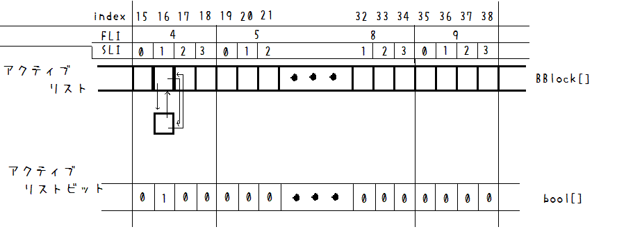
メモリ解放
外部に渡したポインタが不要になった場合、その領域を管理していたBBlockをアクティブリストからフリーリストへ移動させる必要があります。
まずその管理BBlockを求めます。不要となったポインタpを受け取り、BoundaryTagの特性からそこからsizeof(BBlock)だけ前方へ戻ればBBlockポインタのthisが取得できます。これをb1とします。
アクティブリストからフリーリストへ移動させる前に、前後とのマージを行います。
メモリブロック上ではリスト等は関係ありません。線形に隣接して存在しているはずです。
まずb1から前方へ辿り自分に隣接しているBBlock - b0と、後方へ辿り自分に隣接しているBBlock - b2を取得します。それぞれ運用ポインタp,終端タグのポインタcを持ちます。
このふたつの隣接するBBlockのうち、フラグがfalseのものは使用中でないのでマージできます。
それぞれ判定してマージを行ってからサイズを更新し、そのサイズに応じたフリーリストへ再び登録します。
今回は上記で確保した24byteをそのまま解放したとして、例にとってみましょう。
初期に確保する1024byteもBBlockのひとつとして登録されています。フラグは当然false（未使用）
さらに前後の判定用として運用サイズ0byteのBBlockでこのメモリブロックを挟んでおきます。これらのフラグはtrue（使用中）にしておきます
こうすると判定しやすくなります。
さて、24byteの解放要求がくる前はこのようになっています。
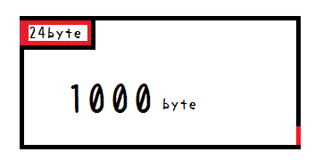
赤がフラグon、黒がフラグoffのBBlockです。
24byteを管理しているBBlockのフラグをそのままオフにすると黒の領域が隣同士並びます。よってこれを右マージして24 + 1000 = 1024 の大きなBBlockに統合します。
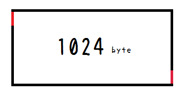
前方は（ダミーが）フラグonなのでマージしません。
リスト関連のフラグは初期状態と同じになります。
以上を踏まえてTLSFのクラスヘッダは以下のようになります。
//TLSFMemoryAllocator.h
//TLSFメモリアロケータ
class TLSFMemoryAllocator{
private:
//第二カテゴリー分割数
static const int N=2;//(2^N=4分割)
uint allSize; //運用総メモリ
uint allAloSize;//総確保メモリ
uint maxDivideNum;//総分割数
byte* baseMem; //確保メモリの先頭ポインタ
BBlock* freeList; //フリーリストブロック配列先頭ポインタ
BBlock* activeList; //アクティブリストブロック配列先頭ポインタ
uint freeListBitFLI; //フリーリストビット(第一カテゴリ)
byte* freeListBitSLI; //フリーリストビット(第二カテゴリ)
bool* freeListBit; //フリーリストビット
bool* activeListBit; //アクティブリストビット
int BNS;//sizeof(BBlock)+sizeof(uint)
int BBS;//sizeof(BBlock)
public:
//コンストラクタ
TLSFMemoryAllocator(uint allMemSize,uint maxExpectDivideNum=-1);
//デストラクタ
~TLSFMemoryAllocator();
private:
//初期化
void Init(uint allMemSize,uint maxExpectDivideNum=-1);
//2^x<=valueとなるxを返す(Most Significant Bit)
int GetMSB(ulong value);
//2^x>=valueとなるxを返す(LSI)
int GetLSB(ulong value);
//第二カテゴリーインデックス(SLI)を返す
byte GetSLI(uint size,byte fli);
//同fli内の上位sliを返す(第二カテゴリ内探索)
byte GetFreeListSLI(byte fli,byte sli);
//指定Fliより上位のFliを返す(第一カテゴリ内探索)
byte GetFreeListFLI(byte fli);
//あるサイズが所属しているリストインデックスを返す
byte GetFIndex(ulong size);
//fli,sliからリストインデックスを求める
byte GetFIndex(byte fli,byte sli);
//立っているビット数をカウントする(32bit ulong)
int GetBitCount(ulong value);
private:
//メモリ切り出し
byte* DivideMemory(uint size);
public://外部用
template<class T>
T* GetMemory(uint size=sizeof(T)){
return (T*)DivideMemory(size);
}
private:
//メモリ解放
void ReleaseMemory(byte* p);
public://外部用
template<class T>
void DeleteMemory(T* p){
p->~T();
ReleaseMemory((byte*)p);
}
//全解放
void Clear();
};
運用すべきメモリサイズと、管理タグも含めた全ての占有メモリサイズを間違えないようにしてください。
管理タグ分の定数としてsizeof(BBlock)、sizeof(uint)を頻繁に使うので、クラスの一メンバとしてコンストラクタ内で設定しておきます。
このBNSとBBSは実行途中で変わりません。変えてはいけません。定数扱いにしてください。（static const int は sizeofで初期化できない）
総分割数について、これは管理タグがどれだけ必要になるかの見積もりです。
残念ながらうまい見積もり方法がなかったので、ユーザー側から「どれだけの"個数"を必要とするか」をコンストラクタの引数として受け取ります。
ユーザーには「確保してほしいサイズ」と「どれくらいの"個数"を必要するかの最大値見積もり」を渡してもらいます。
allSizeが「確保してほしいサイズ」、allAloSizeが「管理タグも含めたTLSFが占有する全てのサイズ」を表します。
総分割数をユーザーが指定しない場合、こちら側でテキトーに管理タグ分の余裕を持ってメモリを確保します。
あとはコメントの通りです。メンバ関数類も既に説明したものです。
実装についてはコンストラクタ、メモリ切りだし、メモリ解放が大きな柱となります。
コンストラクタ内で行う初期化は全解放Clearやデストラクタ内でも利用するので、初期化Initとして分離させておきます。
以下ソースコード。
//コンストラクタ
TLSFMemoryAllocator::TLSFMemoryAllocator(uint allMemSize,uint maxExpectDivideNum/*=-1*/){
Init(allMemSize,maxExpectDivideNum);
}
//初期化
void TLSFMemoryAllocator::Init(uint allMemSize,uint maxExpectDivideNum/*=-1*/){
//総分割数
maxDivideNum=maxExpectDivideNum;
if(maxDivideNum==-1)maxDivideNum=allMemSize/pow(2,N);
//運用総メモリ
//指定量を抑えるベキ乗数で固定(allMemSize<=allSize=2^k)
int k=GetMSB(allMemSize-1)+1;
allSize=pow(2,k);
//定数設定
BNS=sizeof(BBlock)+sizeof(uint);
BBS=sizeof(BBlock);
//総確保メモリ=運用総メモリ+管理タグ分*予想最大分割数分+初期状態の管理タグ分
allAloSize=allSize+BNS*maxExpectDivideNum+BNS*3;
//メモリ確保
baseMem=new byte[allAloSize];
memset(baseMem,0,allAloSize);
//初期チャンクのFLIとSLI
byte fli=GetMSB(allAloSize-1);
byte sli=GetSLI(allAloSize-1,fli);
//ブロックリスト数
byte bNum=fli*pow(2,N)+sli;
//ブロックリスト確保
freeList =new BBlock[bNum];
activeList =new BBlock[bNum];
//ブロックリストビット確保
freeListBitFLI=0; //フリーリストビット(第一カテゴリ)初期化
freeListBitSLI=new byte[fli+1]; //フリーリストビット(第二カテゴリ)初期化
freeListBit=new bool[bNum]; //フリーリストビット
activeListBit=new bool[bNum]; //アクティブリストビット
memset(freeListBitSLI,0,sizeof(byte)*(fli+1));
memset(freeListBit,0,sizeof(bool)*bNum);
memset(activeListBit,0,sizeof(bool)*bNum);
//始めのダミー
byte* b=baseMem;
BBlock* bbp=new(b) BBlock(b+BBS,0);
bbp->flag=true;
activeList[0].Regist(bbp);
activeListBit[0]=true;
//終末のダミー
bbp=new(b+allAloSize-BNS) BBlock(b+allAloSize-BNS+BBS,0);
bbp->flag=true;
activeList[0].Regist(bbp);
activeListBit[0]=true;
//始めはフリーリストに一つだけ大きなブロックがある
bbp=new(baseMem+BNS) BBlock(baseMem+BNS+BBS,allAloSize-BNS*3);
bbp->flag=false;
freeList[bNum-1].Regist(bbp);
//フリーリストビットを立てる
freeListBit[bNum-1]=true;
//(第一カテゴリ)(第二カテゴリ)の最初のフリーリストビットを立てる
freeListBitFLI = (1<<fli);
freeListBitSLI[fli] = (1<<sli);
}
メモリ切りだしも説明済みです。
意外と同じサイズのブロックを確保したり解放したりが繰り返されるので、それはifで判定して分岐します。
//メモリ切り出し
byte* TLSFMemoryAllocator::DivideMemory(uint size){
//最大のサイズのFLI(これを越えてはいけない)
uint mFLI=GetMSB(allAloSize-1);
//確保サイズのfIndex
byte fIndex=0;
uint fli=GetMSB(size+BNS-1);
uint sli=GetSLI(size+BNS-1,fli);
assert(0<fli && fli<=mFLI);
assert(0<=sli && sli<pow(2,N));
//フリーリストから一つ取り出す
//所属フリーリスト内にある確保サイズより大きなブロックを探す
fIndex=GetFIndex(fli,sli);
if(freeListBit[fIndex]){//ちょうどいいフリーリストがあったら
//fIndexで確定
}
else{//フリーリストがなければ上方へ探しにいく
//まず同fli内で上方のフリーリストが存在するかを調べる
sli=GetFreeListSLI(fli,sli);
//上位sliが見つかったら
if(0<=sli && sli<pow(2,N)){
//fIndexを設定
fIndex=GetFIndex(fli,sli);
}
else{//同fli内に上位sliが見つからなかったら
//上位fliに探しにいく
byte nFLI=fli;
fli=GetFreeListFLI(fli);
sli=GetFreeListSLI(fli,0);
fIndex=GetFIndex(fli,sli);
}
}
//fIndexチェック
assert(0<fli && fli<=mFLI);
assert(0<=sli && sli<pow(2,N));
assert(freeListBit[fIndex]);
assert(&freeList[fIndex]!=freeList[fIndex].next);
//元々(分割前)のメモリブロック
BBlock* bbp=freeList[fIndex].next;
//フリーリストのメモリの方が大きくなければならない
assert(size+BNS<=bbp->GetAllSize());
//フリーリストから外す
bbp->Remove();
//フリーリストが無かったらビットをfalseに
if(freeList[fIndex].next==&freeList[fIndex]){
//フリーリストビット
freeListBit[fIndex]=false;
//フリーリストビット(第二カテゴリ)
freeListBitSLI[fli] &= ~(1<<sli);
//フリーリストビット(第一カテゴリ)
if(freeListBitSLI[fli]==0)
freeListBitFLI &= ~(1<<fli);
}
/*
uint freeListBitFLI; //フリーリストビット(第一カテゴリ)
byte* freeListBitSLI; //フリーリストビット(第二カテゴリ)
bool* freeListBit; //フリーリストビット
bool* activeListBit; //アクティブリストビット
*/
//ジャスト時の挙動
//フリーリストのメモリと同じサイズだったならば
if(size+BNS==bbp->GetAllSize()){
//bbpを返す
//アクティブリストへ追加
activeList[fIndex].Regist(bbp);
bbp->flag=true;
activeListBit[fIndex]=true;
//0クリアして返す
memset(bbp->p,0,bbp->GetDataSize());
return bbp->p;
}
//サイズ分割した後に少なくともタグ分は残らないと分割できない
if(bbp->GetAllSize()-(size+BNS)>BNS){
//分割([元々のメモリチャンク]->[残りの分割メモリbbp][新しく確保するsize分のメモリnbp])
//分割メモリの展開位置
byte* nbpPos=(byte*)bbp+bbp->GetAllSize()-size-BNS;
//分割メモリ展開
BBlock* nbp=new(nbpPos) BBlock(nbpPos+BBS,size);
//残りメモリの設定
//分割元が分割先の分の全サイズを超えている
assert(bbp->size>=nbp->GetDataSize()+BNS);
//サイズ設定
bbp->size-=(nbp->GetDataSize()+BNS);
bbp->c=(uint*)(bbp->p+bbp->size);
*bbp->c=BNS+bbp->size;
//分割元のサイズがマイナスでない(総確保メモリを超えない)
assert(bbp->size<allAloSize);
//アクティブリストへ追加
uint nIndex=GetFIndex(nbp->GetAllSize());
activeList[nIndex].Regist(nbp);
nbp->flag=true;
activeListBit[nIndex]=true;
//フリーリストへ追加
//fIndex=GetFIndex(bbp->GetAllSize());
fli=GetMSB(bbp->GetAllSize()-1);
sli=GetSLI(bbp->GetAllSize()-1,fli);
fIndex=GetFIndex(fli,sli);
assert(0<fli && fli<=mFLI);
assert(0<=sli && sli<pow(2,N));
//assert(0<fIndex && fIndex<=mFLI*pow(2,N));
freeList[fIndex].Regist(bbp);
bbp->flag=false;
freeListBit[fIndex]=true;
//フリーリストビット(第二カテゴリ)
freeListBitSLI[fli] |= (1<<sli);
//フリーリストビット(第一カテゴリ)
freeListBitFLI |= (1<<fli);
//0クリアして返す
memset(bbp->p,0,bbp->GetDataSize());
memset(nbp->p,0,nbp->GetDataSize());
return nbp->p;
}
//分割しないでフリーリストをそのまま返す
//アクティブリストへ追加
activeList[fIndex].Regist(bbp);
bbp->flag=true;
activeListBit[fIndex]=true;
//0クリアして返す
memset(bbp->p,0,bbp->GetDataSize());
return bbp->p;
}
次に解放です。
適切なindexの場所に返すようにしないとメモリ確保時の探索にも影響します。
フラグ管理もしっかりしましょう。バグった場合は確保が間違ってるのか解放が間違ってるのかをまず特定しましょう。
//メモリ解放
void TLSFMemoryAllocator::ReleaseMemory(byte* p){
//前方・自身・後方のブロック
BBlock *b0,*b1,*b2;
//前方・自身・後方のデータポインタ
byte *p0,*p1,*p2;
//前方・自身・後方の終末ポインタ
uint *c0,*c1,*c2;
//自身の設定
p1=(byte*)p;
b1=(BBlock*)(p1-BBS);
c1=(uint*)b1->c;
//前方の設定
c0=(uint*)((byte*)b1-sizeof(uint));
b0=(BBlock*)((byte*)b1-(*c0));
p0=b0->p;
//後方の設定
b2=(BBlock*)((byte*)b1+b1->GetAllSize());
p2=(byte*)b2->p;
c2=(uint*)b2->c;
//ポインタの正当性をチェック
assert(baseMem<=(byte*)b0 && (byte*)b0<=baseMem+allAloSize);
assert(baseMem<=(byte*)p0 && (byte*)p0<=baseMem+allAloSize);
assert(baseMem<=(byte*)c0 && (byte*)c0<=baseMem+allAloSize);
assert(baseMem<=(byte*)b1 && (byte*)b1<=baseMem+allAloSize);
assert(baseMem<=(byte*)p1 && (byte*)p1<=baseMem+allAloSize);
assert(baseMem<=(byte*)c1 && (byte*)c1<=baseMem+allAloSize);
assert(baseMem<=(byte*)b2 && (byte*)b2<=baseMem+allAloSize);
assert(baseMem<=(byte*)p2 && (byte*)p2<=baseMem+allAloSize);
assert(baseMem<=(byte*)c2 && (byte*)c2<=baseMem+allAloSize);
assert((byte*)b0<=p0 && p0<=(byte*)c0);
assert((byte*)b1<=p1 && p1<=(byte*)c1);
assert((byte*)b2<=p2 && p2<=(byte*)c2);
assert((byte*)c0<=(byte*)b1);
assert((byte*)c1<=(byte*)b2);
//b1をアクティブリストから外す
uint aIndex=GetFIndex(b1->GetAllSize());
b1->Remove();
//アクティブリストが無かったらビットをfalseに
if(activeList[aIndex].next==&activeList[aIndex]){
activeListBit[aIndex]=false;
}
//左マージ
if(b0->flag==false){
//b0をフリーリストから外す
byte fli=GetMSB(b0->GetAllSize()-1);
byte sli=GetSLI(b0->GetAllSize()-1,fli);
uint fIndex=GetFIndex(b0->GetAllSize());
b0->Remove();
//フリーリストが無かったらビットをfalseに
if(freeList[fIndex].next==&freeList[fIndex]){
//フリーリストビット
freeListBit[fIndex]=false;
//フリーリストビット(第二カテゴリ)
freeListBitSLI[fli] &= ~(1<<sli);
//フリーリストビット(第一カテゴリ)
if(freeListBitSLI[fli]==0)
freeListBitFLI &= ~(1<<fli);
}
//b0の設定
b0->size+=b1->GetAllSize();
b0->c=b1->c;
*(b0->c)=b0->size+BNS;
//以後b0をb1として扱う
b1=b0;
}
//右マージ
if(b2->flag==false){
//b2をフリーリストから外す
byte fli=GetMSB(b2->GetAllSize()-1);
byte sli=GetSLI(b2->GetAllSize()-1,fli);
uint fIndex=GetFIndex(b2->GetAllSize());
b2->Remove();
//フリーリストが無かったらビットをfalseに
if(freeList[fIndex].next==&freeList[fIndex]){
//フリーリストビット
freeListBit[fIndex]=false;
//フリーリストビット(第二カテゴリ)
freeListBitSLI[fli] &= ~(1<<sli);
//フリーリストビット(第一カテゴリ)
if(freeListBitSLI[fli]==0)
freeListBitFLI &= ~(1<<fli);
}
//b1の設定
b1->size+=b2->GetAllSize();
b1->c=b2->c;
*(b1->c)=b1->size+BNS;
//以後b2は扱えない
}
//b1を適切なフリーリストへ入れる
byte fli=GetMSB(b1->GetDataSize()-1);
byte sli=GetSLI(b1->GetDataSize()-1,fli);
uint fIndex=GetFIndex(b1->GetDataSize());
freeList[fIndex].Regist(b1);
freeListBit[fIndex]=true;
//フリーリストビット(第二カテゴリ)
freeListBitSLI[fli] |= (1<<sli);
//フリーリストビット(第一カテゴリ)
freeListBitFLI |= (1<<fli);
//b1の設定
b1->flag=false;
//残骸処理0クリア
memset(b1->p,0,b1->GetDataSize());
}
最後に全解放のClearとデストラクタです。
Initを用います。
//確保しているメモリを全削除して最初の状態に戻す
//デストラクタは呼ばれない
void TLSFMemoryAllocator::Clear(){
//一旦解放して初期化し直す
memset(baseMem,0,allSize);
delete[] baseMem;
baseMem=NULL;
delete[] freeList;
delete[] activeList;
freeList=NULL;
activeList=NULL;
delete[] freeListBitSLI;//フリーリストビット(第一カテゴリ)
delete[] freeListBit; //フリーリストビット(第二カテゴリ)
delete[] activeListBit; //アクティブリストビット
freeListBitSLI=NULL;
freeListBit=activeListBit=NULL;
Init(allSize,maxDivideNum);
}
//デストラクタ
TLSFMemoryAllocator::~TLSFMemoryAllocator(){
Clear();
memset(baseMem,0,allSize);
delete[] baseMem;
baseMem=NULL;
delete[] freeList;
delete[] activeList;
freeList=NULL;
activeList=NULL;
delete[] freeListBitSLI; //フリーリストビット(第一カテゴリ)
delete[] freeListBit; //フリーリストビット(第二カテゴリ)
delete[] activeListBit; //アクティブリストビット
freeListBitSLI=NULL;
freeListBit=activeListBit=NULL;
}
GetMemoryとDeleteMemoryは実際に外部から使う用の関数です。
メモリ切りだしと解放を様々なサイズの型でサポートするためにテンプレート関数にしました。
実際に使うときにはまず、TLSFのインスタンスをnewで確保して準備します。
そして別に運用するポインタ(例えばintポインタ)を宣言し、普通はその型をnewして割り当てますが、そこをTLSF->GetMemoryに変えます。
//TLSFのインスタンスを確保(サイズはテキトー)
TLSF* mem=new TLSF(128,4);
int *p;
//pにメモリを割り当て
p=mem->GetMemory<int>();
//以下pを通して通常と同じようにアクセスできる
*p=123;
//解放
mem->ReleaseMemory(p);
//TLSFを終了する
delete mem;